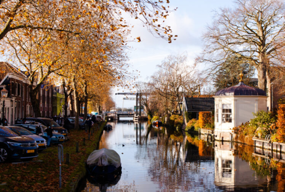

Viajar a Países Bajos en Primavera
Comenzamos con la estación de las flores, de lo colorido y el buen tiempo. La temperatura en estos meses suele oscilar entre los diez y veinte grados así que en los días soleados puedes ir incluso en manga corta. Es también en este mes donde la temperatura será más cálida pero a cambio de mayor número de precipitaciones. Ésta es la temporada perfecta para visitar los campos de tulipanes, ya crecidos después de todo el año cuidándolos, que estarán hasta mediados de mayo. Nosotros te recomendamos el Keukenhof, que con 32 hectáreas es el mayor jardín de tulipanes del mundo y se encuentra a una media hora en coche desde Ámsterdam. Para nosotros es uno de los lugares más bonitos del país y te aseguramos que es una excursión de la que no te vas a arrepentir. Un evento importante para destacar de esta época es el cumpleaños del Rey, la fiesta nacional de los Países Bajos, que se celebra el día 27 de abril. Todo un festival, en el que verás a todo el mundo vestido de naranja y las ciudades decoradas de este color. Los habitantes beben y bailan en las calles, hay música por todas partes y los canales se llenan de barcos. En definitiva, un día para salir a la calle y disfrutar del ambiente. Eso sí, hay una regla que debes cumplir: llevar algo naranja
viajar a países bajos en verano
El verano es la estación que más turistas atrae; y es que con sus parques, sus playas y sus canales los Países Bajos se disfrutan más cuando estás bajo el sol. En los meses más calurosos, como son julio y agosto, las temperaturas durante el día pueden llegar a los veinte o veinticinco grados. Por eso, puedes meter sin problema en la maleta pantalones cortos, camisetas e incluso bañador, por si te apetece acercarte a alguna playa o lago. Sin embargo, ya hemos avisado que el clima en este país es muy variable, así que no debes olvidar traer una chaqueta para la noche y, por supuesto, un chubasquero. Porque aunque haga un sol de escándalo durante todo el día, nunca sabes cuándo puede caer un pequeño chaparrón. Como los días calurosos tampoco abundan, los neerlandeses disfrutan de ellos hasta el último momento. Durante estos meses los canales se llenan de barcos y no es raro ver a la gente dándose un chapuzón en ellos. No sólo eso, para los más pequeños algunos parques también cuentan con piscinas para que ellos también puedan disfrutar del buen tiempo.
viajar a países bajos en otoño
as temperaturas otoñales se parecen bastante a las de la primavera, entre diez y veinte grados, sobre todo en los primeros meses de la estación. Por lo general, será suficiente con meter en la maleta jersey y abrigo, sobre todo para las noches. No obstante, al mediodía, si el sol está brillando, el día puede ser bastante cálido. Si tienes suerte con el clima, en esta época todavía podrás disfrutar de un paseo por los canales y de comer en alguna terraza. Nosotros te recomendamos un paseo por cualquiera de sus parques para admirar las maravillosas tonalidades marrones y rojizas que deja el otoño. Pero si, por el contrario, te toca un clima frío o lluvioso durante tu visita, todavía hay muchísimos planes que puedes hacer. ¡Ya te hemos dicho que los neerlandeses están acostumbrados a la lluvia! En ese caso, te recomendamos planes de interior como visitar un museo (aquí puedes ver nuestra lista con los mejores museos del país), ir de tiendas, o disfrutar de alguna de las cafeterías o bares que hay por la ciudad.
viajar a países bajos en invierno
Durante los meses de invierno las temperaturas son frías: durante el día no suelen subir de los diez grados y generalmente alcanzan niveles bajo cero durante las noches. ¡Así que abrígate bien! Acuérdate de traer chaquetón, bufanda, guantes, gorro… Por lo general, en los Países Bajos no suele nevar a menudo y si lo hace es sólo durante una semana o así. Si las temperaturas bajan mucho los canales se congelan y cuando eso ocurre no es raro ver a todos los neerlandeses saliendo a la calle para patinas sobre ellos. Y es que a los neerlandeses les encanta el patinaje sobre hielo y durante esta época suelen colocarse pistas en diferentes zonas de la ciudad. Si lo que buscas es un viaje tranquilo y más asequible, esta estación es perfecta ya que (exceptuando las fechas claves de Navidad) no suele haber muchos turistas y los precios en billetes y hoteles son más bajos. Además, te aseguramos que el invierno en los Países Bajos es algo mágico y único. Ya desde finales de noviembre las calles están decoradas con luces y aparecen en la calle puestos de olliebolen, un dulce típico de esta época. Los niños se preparan para la llegada de Sinterklaas el 5 de diciembre. Si visitas en estas fechas lo más seguro es que te encuentres alguna cabalgata.